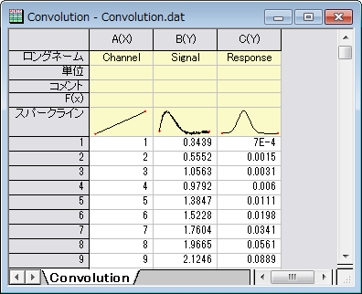
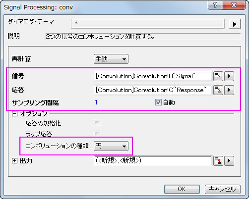
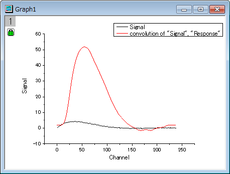

コンボリューション
コンボリューション
サマリー
コンボリューションは信号処理で一般的に使われています。Originは、コンボリューションを計算するために、フーリエ変換を伴うコンボリューション定理を使用しています。
学習する項目
このチュートリアルでは、Originでコンボリューションを行う方法を紹介します。
ステップ
- 新しいワークブックを用意します。
- サンプルデータ <Origin インスト―ルディレクトリ>\Samples\Signal Processing\Convolution.dat をインポートします。
- 
- B、C列を選択して、解析：信号処理：コンボリューションを選択し、Signal Processing: convダイアログを開きます。ダイアログでは、B列が信号データ、C列が応答データとしてラベル付けされます。サンプリング間隔はXデータを参照してセットされます。
- オプションの項目を開き、コンボリューションの種類を円に変更し、入力データ範囲外側のデータポイントは範囲内のデータポイントの繰り返しとします。
- 
- OKをクリックして結果を出力します。
- ワークシートで列BとEを選択（Ctrlキーを押しながらクリックをして隣り合わない列を選択できます）し、メニューから作図：線図:折れ線と操作して入力信号と出力信号のグラフを作成します。
- 